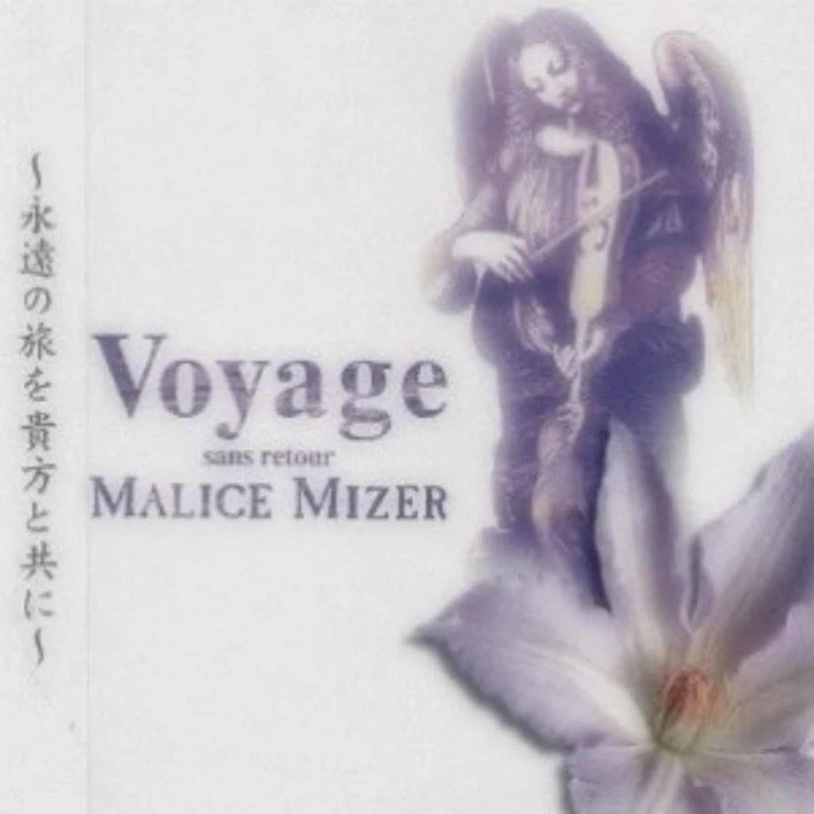
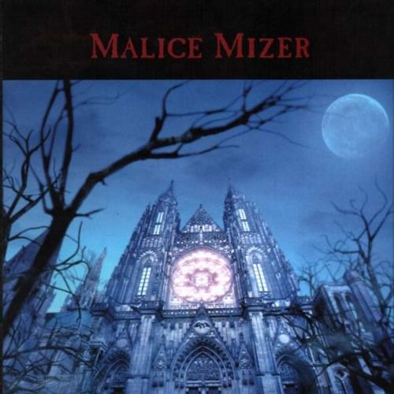
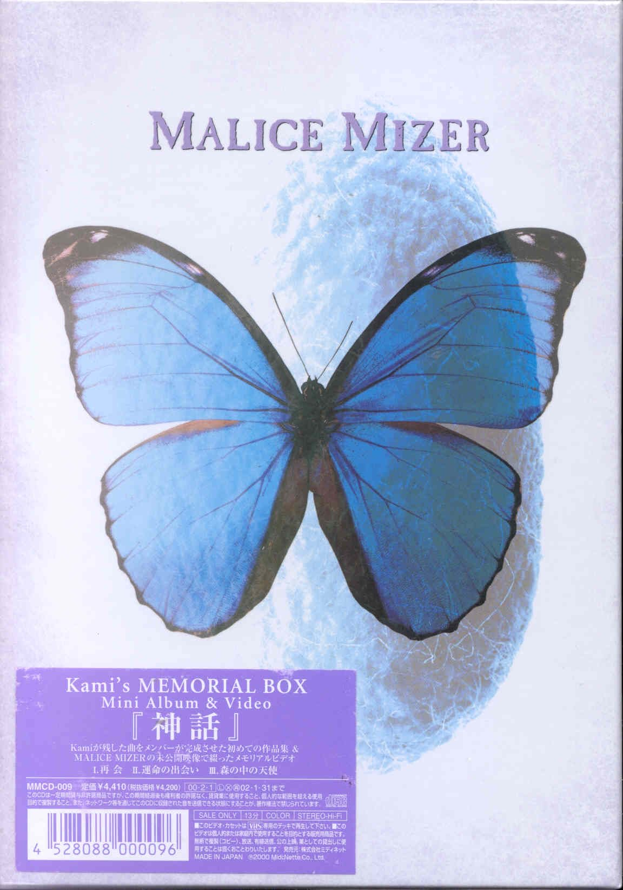
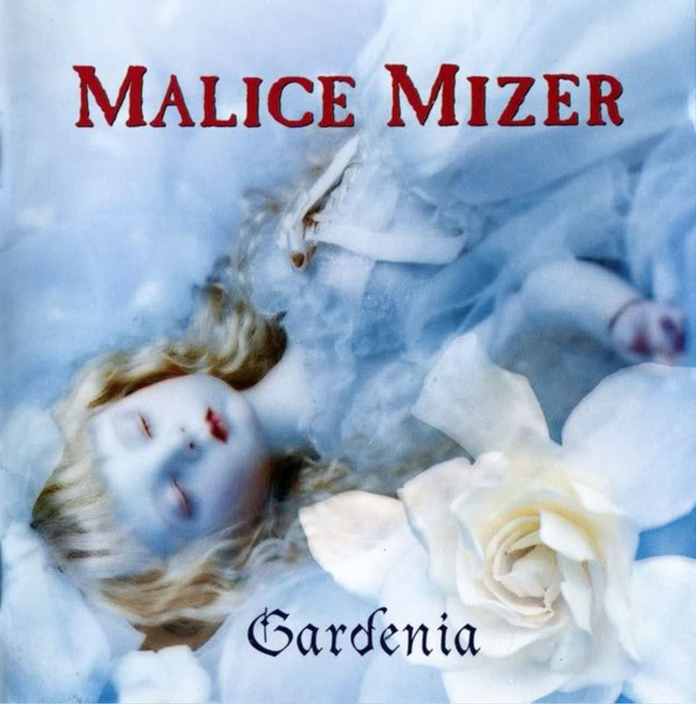

Prvi studijski album benda. Zvuk je oslonjen na klasični visual-kei i alternativni rok. Tekstovi su melanholični, govore o romantičnoj patnji, usamljenosti i idealizovanoj ljubavi. Kasnije je opet izdat sa dodatnim materijalom. Ovaj album predstavlja početak formiranja identiteta za bend.

Album predstavlja značajnu prekretnicu za zvuk benda. Uvodi orkestracije, klavijature i barokne aranžmane. Tematski je inspirisan evropskim romantizmom i tragedijom. U ovom albumu lirika počinje da liči na roman, narativna je, slikovita, istorijski inspirisana.
Najkomercijalnije uspešan album benda. Sadrži neke od njihovih najpoznatijih pesama i visokobudžetne produkcije. Kombinuje simfonijski rok i darkwave elemente, uz raskošnu vizuelnu promociju. Tematke tekstova su večna lepota, eros i smrt, maskembali, dvorci, ruže, vampirizam i aristokratija.

Poslednji studijski album benda, izrazito mračnog i religijski inspirisanog koncepta. Karakterišu ga zvuci čembala i orgulja, puno instrumentala, a manje vokala, česti horski vokali. Kao što je spomenuto, dešava se preokret u konceptu benda zbog smrti bubnjara Kamija, ovaj album je oproštaj od njega. Tekstovi su o grehu i iskupljenju, smrti i vaskrsenju, patnji i nadi. Može se smatrati kao vrhunac teatralne i vizuelne estetike.
Izdat godine 1997, singl "Bel Air" je romantična kompozicija sa zanimljivim zvukom koji dolazi iz tehnike dvojnih gitara. Dve gitare sviraju dve različite melodije koje se uklapaju zajedno i zvuče kao neki kanon. Ova tehnika je inspirisana barokom.

Singl "Au Revoir" je izdat 1998. godine i jedna je od najpoznatijih pesama benda, često smatran njihovom reprezentativnom baladom.
Vrlo uspešan singl. Poznat po raskošnom spotu i kostimima. Nostalgičnog, raskošnog ali i mističnog je zvuka.
Mračniji singl sa industrijskim, eksperimentativnim i elektronskim zvukom i spotom. Tema teksta je o tajnim društvima, moći i manipulaciji, religijskoj simbolici.

Klaha je ovim albumom najavio gotički pravac albuma koji mu je sledeo. Pesma je gotovo potpuno horska kompozicija.
Ovo je jedna od poslednjih pesama benda. Ima razdragan i romantičan ton, pokazuje da Klaha nije sposoban samo za mračne pesme. Cvet gardenija se koristi kao metafora za krhku, ali postojanu lepotu.
Lena Dragutinović Gimnazija Bačka Palanka 2026.